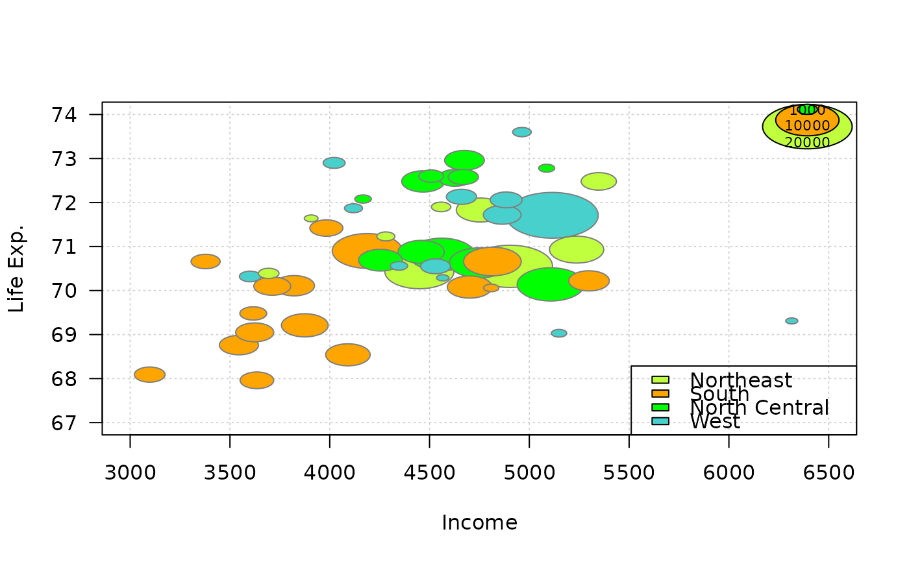

PlotBubble.RdDraw a bubble plot, defined by a pair of coordinates x, y to place the bubbles, an area
definition configuring the dimension and a color vector setting the color of the bubbles.
The legitimation to define a new function instead of just using plot(symbols(...)) is the automated calculation of the axis limits, ensuring that
all bubbles will be fully visible.
PlotBubble(x, ...) # S3 method for default PlotBubble(x, y, area, col = NA, cex = 1, border = par("fg"), xlim = NULL, ylim = NULL, na.rm = FALSE, ...) # S3 method for formula PlotBubble(formula, data = parent.frame(), ..., subset, ylab = varnames[response])
| x, y | the x and y co-ordinates for the centres of the bubbles. They can be specified in any way which is accepted by |
|---|---|
| area | a vector giving the area of the bubbles. |
| col | colors for the bubbles, passed to |
| cex | extension factor for the area. |
| border | the border color fot the bubbles. The default means |
| xlim, ylim | axes limits. |
| na.rm | logical, should NAs be omitted? Defaults to FALSE. |
| formula | a formula of the form |
| data | an optional matrix or data frame (or similar: see |
| subset | an optional vector specifying a subset of observations to be used. |
| ylab | the y-label for the plot used in the formula interface. |
| ... | the dots are passed to the |
Argument inches controls the sizes of the symbols. If TRUE (the default), the symbols are scaled so that the largest dimension of any symbol is one inch. If a positive number is given the symbols are scaled to make largest dimension this size in inches (so TRUE and 1 are equivalent). If inches is FALSE, the units are taken to be those of the appropriate axes.
This behaviour is the same as in symbols.
A legend can be added with BubbleLegend.
Andri Signorell <andri@signorell.net>
#> [[1]] #> [1] 286580 326340 352960 141560 355350 194050 247670 340754 340754 270820 #> [11] 307750 332680 212600 323450 325800 303330 242260 294860 131330 126680 #> [21] 142210 142920 318790 290250 316600 328920 323520 266610 263670 271570 #> [31] 332360 295960 370860 322640 381020 327610 340754 319820 251810 172090 #> [41] 327760 326490 361200 333000 320950 332680 252810 344380 319560 322640 #> [51] 276750 327650 285630 345340 342610 152660 319470 140430 138680 322640 #> [61] 239370 322640 327710 372120 322640 322640 332950 185940 336730 286040 #> [71] 326140 342850 326930 278740 172280 340754 342650 137950 319210 321180 #> [81] 265360 150450 279120 315100 315180 289690 #> #> $ylab #> [1] "latitude" #> #> $area #> [1] 600000000 400000000 600000000 1000000000 600000000 400000000 #> [7] 200000000 400000000 400000000 600000000 600000000 400000000 #> [13] 600000000 400000000 600000000 600000000 400000000 600000000 #> [19] 800000000 600000000 400000000 1000000000 400000000 800000000 #> [25] 600000000 600000000 600000000 600000000 600000000 400000000 #> [31] 400000000 400000000 600000000 400000000 800000000 200000000 #> [37] 400000000 400000000 400000000 600000000 400000000 400000000 #> [43] 600000000 400000000 400000000 400000000 200000000 400000000 #> [49] 400000000 400000000 400000000 400000000 400000000 800000000 #> [55] 400000000 600000000 400000000 1000000000 1000000000 400000000 #> [61] 400000000 400000000 400000000 400000000 400000000 400000000 #> [67] 600000000 600000000 600000000 600000000 600000000 400000000 #> [73] 400000000 400000000 600000000 400000000 400000000 800000000 #> [79] 400000000 600000000 600000000 400000000 600000000 400000000 #> [85] 400000000 200000000 #> #> $col #> [1] "#00000080" #>cols <- c("olivedrab1","orange","green","mediumturquoise","mediumorchid2","firebrick1") PlotBubble(x = state.x77[,"Income"], y = state.x77[,"Life Exp"], cex=.00004, area = state.x77[,"Population"], col = cols[state.region], border="grey50", panel.first=grid(), xlab="Income", ylab="Life Exp.", las=1 )BubbleLegend(x = "topright", area = c(20000, 10000, 1000), cex=.00004, frame=NA, cols=cols[1:3], labels = c(20000, 10000, 1000), cex.names=0.7)